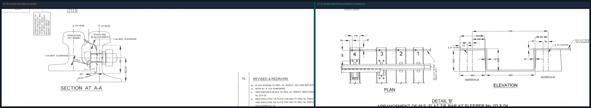

Complete 1 in 12 Turnout Suite (RDSO/T-6154) & 10125 mm Thick-Web Switch (RDSO/T-6155)
Automatically calculates mandatory +10% wear/breakage spares for every purchase order of 1:12 turnouts.
| Part / Drawing No. | Description | Qty per Turnout | Base Order Qty | Mandatory +10% Spare Buffer | Total Procurement Target |
|---|
Visualizing semantic relationships across RDSO standards (T-6154 Layout, T-6155 Switch, T-6216 SSD, T-6275 Check Rails, T-6280 Crossing, and T-7075 1:8.5).

| Drawing No. | Alt | Category | Description & Engineering Role | File Reference |
|---|---|---|---|---|
| RDSO/T-6154 | ALT 6 | Master Turnout Layout | General Layout of 1 in 12 Turnout 60 kg (UIC) on PSC Sleepers (Sleepers 1 to 64). | RDSO_T_6154_ALT_6.pdf |
| RDSO/T-6155 | ALT 13 | Curved Switch Assembly | 10125 mm Curved Switch with ZU-1-60 Thick Web Tongue Rails, Detail 'B' Tie Bar, and LIST - A. | 2025-01-28-RDSO_T_6155_ALT_13.pdf |
| RDSO/T-6155/1 | ALT 7 | Particulars & BOM | Bill of materials, plates, fittings, and fastening schedule for 10125 mm switch. | RDSO_T_6155_1_ALT_7.pdf |
| RDSO/T-6216 | ALT 5 | Spring Setting Device | SSD Assembly mounted on Sleeper 13 (JOH) to maintain flangeway clearance. | RDSO_T_6216_ALT_5.pdf |
| RDSO/T-6217 | ALT 4 | SSD Component Parts | Complete parts catalogue for Spring Setting Device (Items 1 to 39). | RDSO_T_6217 TO RDSO_T_6217_39_ALT_4.pdf |
| RDSO/T-6275 | ALT 4 | Check Rail Assembly | Check rails (5000 mm) & chairs for 1:12 CMS Crossing with 41-45 mm clearance. | RDSO_T_6275 TO RDSO_T_ 6275_4_ALT_4.pdf |
| RDSO/T-6279 | ALT 2 | CMS Crossing Unit | 1 in 12 Cast Manganese Steel Crossing monoblock casting 60 kg (UIC). | RDSO_T_6279_Alt_2.pdf |
| RDSO/T-6280 | ALT 4 | CMS Crossing Assembly | Complete Crossing Assembly on Sleepers 41 to 55 with bearing plates and check rails. | RDSO_T_6280_ALT_4.pdf |
| RDSO/T-6280/1 | ALT 2 | Weldable CMS Crossing | CMS crossing with explosively welded transition rails for direct LWR/CWR welding. | RDSO_T_6280_1_Alt_2.pdf |
| RDSO/T-7075 | ALT 1 | 1:8.5 Switch Assembly | 6425 mm Curved Switch with ZU-1-60 Thick-Web Tongue Rails for 1 in 8.5 Turnout. | RDSO_T_7075_ALT_1.pdf |
| RDSO/T-7076 | ALT 1 | 1:8.5 Turnout Layout | Layout of 1 in 8.5 Turnout 60 kg on PSC Sleepers (54 Sleepers). | RDSO_T_7076_ALT_1.pdf |
| Critical Dimension / Clearance | Standard Value | Governing Note / Rule | Maintenance Tolerance |
|---|---|---|---|
| Throw of Switch at Toe | 160 mm | RDSO/T-6155 Note 4 | 160 mm ± 3 mm |
| Flangeway Clearance at Heel (JOH) | 60 mm min | RDSO/T-6216 Note 2 | 60 mm - 65 mm |
| Check Rail Flangeway Clearance | 44 mm (Nominal) | RDSO/T-6275 Note 3 | 41 mm min / 45 mm max |
| Tie Bar Detail 'B' Drop Bend | 222 mm drop | RDSO/T-6155 Detail 'B' | 222 mm ± 2 mm |
| Tie Bar Bottom Clearance to Sleeper | 12 mm min | RDSO/T-6155 Alt 12/13 | 12 mm - 18 mm |
| Dowel Retrofit Depth & Diameter | 35 mm dia x 165 mm depth | RDSO/T-6155 Note 25 | Must cure 24 hrs prior to torque |
| Mandatory Spare Ratio (LIST - A) | +10% Buffer | RDSO/T-6155 Note 28 | Enforced on 24 critical items |
Where dowel holes are missing in PSC Sleepers 03 & 04, drill 35 mm dia holes to 165 mm depth using rotary percussion drills. Flush with compressed dry air. Inject approved IS: 12994-1990 Type L-100 epoxy resin and insert RDSO/T-3002 dowels. Mandatory 24-hour curing is strictly required before driving plate screws or applying torque.
When rewelding the Stock Rail Joint (SRJ) in the field, Sleeper No. 1 must be shifted inwards slightly so the weld remains floating and not directly supported on the sleeper edge. Hole in the tie bar must be shifted to match.
Check tongue and stock rail versines against IRPWM Annexure 4/6 & 4/7 prior to laying. Rectify transit distortions with approved hydraulic rail benders.
Verify that check rail flangeway gap remains strictly between 41 mm and 45 mm opposite the nose of crossing. Flare ends must maintain 89 mm opening to prevent flange strike on high-speed trains.